We To do that we need to use an Estimator to get Estimates, which are our best guess of the population parameters.
The population parameters are your Estimand – what you want to know but have to estimate
Picture of perfect cake (Estimand), Cake recipe (Estimator), your cake (Estimate)
How good our are estimates?
Thus far we used the standard error to help us define the precision around the estimates… and I just gave you the equation
Where does this come from, and how can I think about the process?
Remember, we only get one shot to estimate the population.
Code
# Load the ggplot2 library for plottinglibrary(ggplot2)# --- 1. Define the True Population Model ---# These are the "true" parameters that we are trying to discover.true_beta0 <-10true_beta1 <-2true_sigma <-15population_size <-20000# Create the entire population based on the true modelpopulation <-data.frame(x =runif(population_size, 0, 50))population$y <- true_beta0 + true_beta1 * population$x +rnorm(population_size, mean =0, sd = true_sigma)# --- 2. Draw a Random Sample from the Population ---sample_size <-50sample_data <- population[sample(1:population_size, sample_size), ]# --- 3. Fit a Regression Model to the SAMPLE ---sample_model1 <-lm(y ~ x, data = sample_data)sample_beta0_hat <-coef(sample_model1)[1]sample_beta1_hat <-coef(sample_model1)[2]# --- 4. Visualize the Relationship ---pop <-ggplot(population, aes(x = y)) +geom_density(fill ="lightblue", alpha =0.8, color ="black") +labs(title ="Distribution of the Outcome Variable (Y) in the Population",subtitle ="Y is determined by y = 10 + 2X + rnorm(0,15) ",x ="Outcome (Y)",y ="Density" ) +theme_minimal(base_size =14)pop
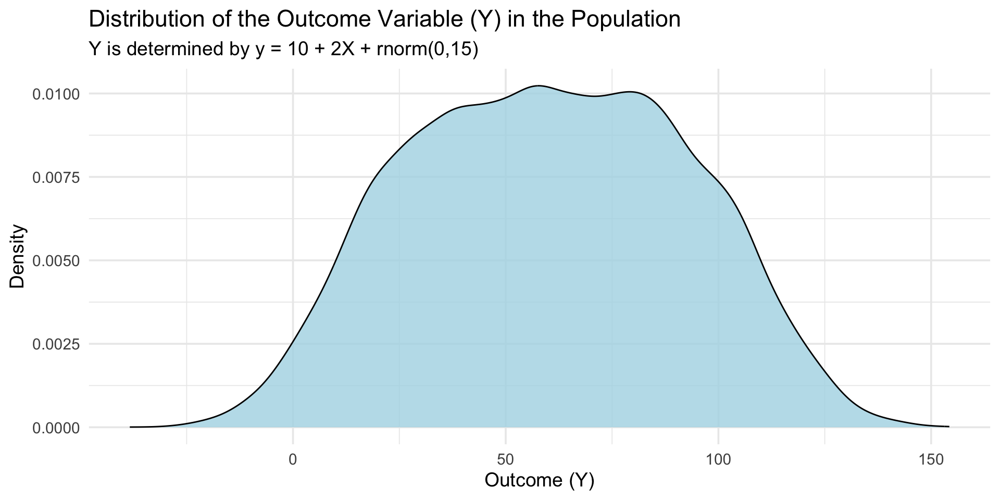
Code
ggplot(population, aes(x = x, y = y)) +# Plot the entire population as faint gray pointsgeom_point(color ="gray80", alpha =0.5) +# Add the TRUE population regression line in redgeom_abline(intercept = true_beta0,slope = true_beta1,color ="black",size =1.5,linetype ="dashed") +# Highlight the points from our random sample in bluegeom_point(data = sample_data, color ="blue", size =2.5) +# Add the ESTIMATED sample regression line in bluegeom_abline(intercept = sample_beta0_hat,slope = sample_beta1_hat,color ="green",size =1.5) +labs(subtitle ="The green line is our sample estimate of the population (black)",x ="Predictor (X)",y ="Outcome (Y)") +theme_minimal(base_size =14)
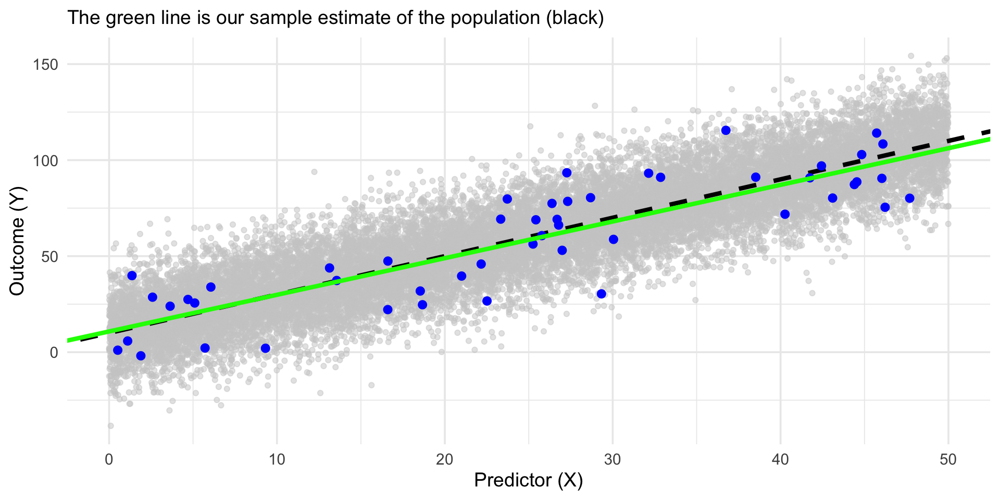
What we normally see
Code
ggplot(sample_data, aes(x = x, y = y))+geom_point() +geom_smooth(method='lm', se =FALSE)
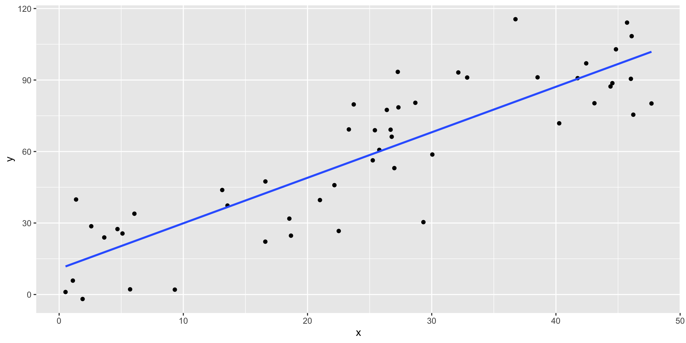
The major goal that we have in statistical inference is to make confident claims about the population based on a small representation of it, the sample. We use features of the sample (statistics) to inform us about features of the population (parameters).
Any sample will be off the mark in how well it captures the important features of a population due to sampling variability.
The sampling distribution tells us how far off the mark we can expect a sample statistic to be.
Sampling distribution - empirical
Run 5000 experiments from a known population. Make a distribution of the 5000 regression coefs to tell us what we should expect from any 1 experiment.
Code
library(ggplot2)# --- Step 1: Create a "True" Population ---true_intercept <-10true_slope <-2true_error_sd <-15# The true standard deviation of the residuals (sigma)population_size <-20000# Create the entire population based on our true modelset.seed(74) # for reproducibilitypopulation_data <-data.frame(x =runif(population_size, 0, 50))population_data$y <- true_intercept + true_slope * population_data$x +rnorm(population_size, mean =0, sd = true_error_sd)# --- Step 2: Simulate the Process of Repeated Sampling ---n_simulations <-5000# Let's take 5000 different samplessample_size <-100# Each sample will have 10 data pointsall_my_slopes <-numeric(n_simulations) # An empty vector to store our resultsall_my_models <-data.frame(intercept =numeric(n_simulations),slope =numeric(n_simulations))for (i in1:n_simulations) {# Draw one random sample of 100 data points from our population current_sample <- population_data[sample(1:population_size, sample_size), ]# Fit a regression model to this one small sample sample_model <-lm(y ~ x, data = current_sample)# Extract and store the estimated slope from this sample's model all_my_models$intercept[i] <-coef(sample_model)[1] all_my_models$slope[i] <-coef(sample_model)[2]}# --- Step 3: Build and Analyze the Sampling Distribution ---all_my_slopes <- all_my_models$slopemean_of_slopes <-mean(all_my_slopes)cat("The true slope is 2.0. The mean of our 5000 estimated slopes is:", round(mean_of_slopes, 4), "\n")
The true slope is 2.0. The mean of our 5000 estimated slopes is: 1.9876
Code
simulated_standard_error <-sd(all_my_slopes)cat("The standard deviation of our slopes (the Simulated Standard Error) is:", round(simulated_standard_error, 4), "\n\n")
The standard deviation of our slopes (the Simulated Standard Error) is: 0.1048
Sampling distribution
For each sample, we calculate a statistic, and then create a distribution of sample statistics
Code
# --- Step 5: Visualize Everything ---# A histogram clearly shows the distribution of our estimates.sampling_dist_plot <-ggplot(data.frame(slopes = all_my_slopes), aes(x = slopes)) +geom_histogram(aes(y = ..density..), bins =30, fill ="skyblue", color ="black") +geom_density(color ="red", size =1) +geom_vline(xintercept = true_slope, color ="blue", linetype ="dashed", size =1.5) +labs(title ="Sampling Distribution of the Slope (β₁)",subtitle =paste("Based on", n_simulations, "samples of size", sample_size),x ="Estimated Slope Coefficient (β̂₁)",y ="Density" ) +# geom_vline(2.014) + theme_minimal()print(sampling_dist_plot)
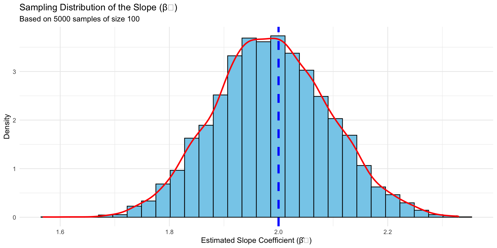
We normally do not have access to this data, but if we did we now have a distribution of plausible statistics drawn from the population.
This distribution tells us what we would expect if we repeated the experiment again, and again, and again
Regression coef is an unbiased estimator because we can find the true mean (if we repeat experiment infinite times)
Range of scores are SUPER helpful to gauge our precision of the estimate.
If we look at just one sample (like normal experiments), we won’t exactly estimate the population intercept (10) and slope (2).
Code
# --- Step 4:Connecting to a Single Regression Summary ---summary(sample_model) # Using the last model from our loop
Call:
lm(formula = y ~ x, data = current_sample)
Residuals:
Min 1Q Median 3Q Max
-34.057 -8.496 0.809 7.263 35.347
Coefficients:
Estimate Std. Error t value Pr(>|t|)
(Intercept) 12.72707 2.56796 4.956 3.01e-06 ***
x 1.87082 0.09314 20.086 < 2e-16 ***
---
Signif. codes: 0 '***' 0.001 '**' 0.01 '*' 0.05 '.' 0.1 ' ' 1
Residual standard error: 13.16 on 98 degrees of freedom
Multiple R-squared: 0.8046, Adjusted R-squared: 0.8026
F-statistic: 403.4 on 1 and 98 DF, p-value: < 2.2e-16
Sampling distribution
Code
# --- Step 5: Visualize Everything ---# A histogram clearly shows the distribution of our estimates.sampling_dist_plot <-ggplot(data.frame(slopes = all_my_slopes), aes(x = slopes)) +geom_histogram(aes(y = ..density..), bins =30, fill ="skyblue", color ="black") +geom_density(color ="red", size =1) +geom_vline(xintercept = true_slope, color ="blue", linetype ="dashed", size =1.5) +geom_vline(xintercept =1.87082, color ="black", linetype ="solid", size =1.5) +labs(title ="Sampling Distribution of the Slope (β₁)",subtitle =paste("Based on", n_simulations, "samples of size", sample_size),x ="Estimated Slope Coefficient (β̂₁)",y ="Density" ) +# geom_vline(2.014) + theme_minimal()print(sampling_dist_plot)
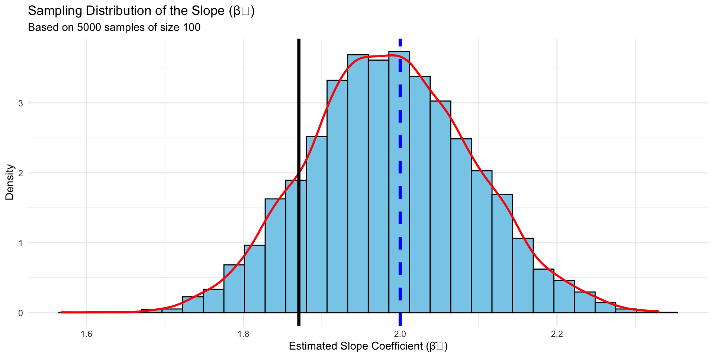
Did we get unlucky with our one experiment? Is this just part of the uncertainty we have to live with?
Sampling distribution
Can be for any statistic. Mean, SD, r, b, etc.
http://shiny.calpoly.sh/Sampling_Distribution/
If unbiased, the mean of the sampling distribution is equal to the population parameter
The standard deviation of the sampling distribution is called standard error, and helps us gauge our precision of the statistic.
Sampling distribution
Given we don’t have access to the population, nor do we have the time and resources to conduct thousands of replication studies, what do we do?
Our sampling distribution will be theoretical… and it will be normal.
Central limit theorm take 2
Central Limit Theorem: the sum of a large number of independent random variables will be approximately normally distributed, even if original distributions are not normal.
We previously used this to show that the normal was everywhere. Here we are going to use it to define the shape of our sampling distribution.
The sample size necessary to be “approximately normal” depends on the nature of the underlying data. The less normal it is, the larger the sample size necessary in order for the sampling distribution of the means to become normal.
Code
# Load the required librarieslibrary(ggplot2)library(patchwork)# --- 1. Create a Skewed Population ---# We'll use an exponential distribution, which is very non-normal.population_size <-100000population <-data.frame(value =rexp(population_size, rate =0.5))# --- 2. Set Simulation Parameters ---sample_size <-40# The size of each sample we draw from the populationn_simulations <-5000# The number of samples we will take# Create a vector to store the mean of each samplesample_means <-numeric(n_simulations)# --- 3. Run the Simulation ---for (i in1:n_simulations) {# Draw a random sample from the population my_sample <-sample(population$value, size = sample_size)# Calculate the mean of that sample and store it sample_means[i] <-mean(my_sample)}# Create a data frame of the resultssampling_dist_data <-data.frame(mean = sample_means)# --- 4. Visualize the Results ---# Plot 1: The original, skewed population distributionplot_population <-ggplot(population, aes(x = value)) +geom_density(fill ="lightcoral", alpha =0.8) +labs(title ="1. Population Distribution",subtitle ="Highly skewed (Exponential)",x ="Value", y ="Density") +theme_minimal(base_size =14)# Plot 2: The distribution of sample means plot_sampling_dist <-ggplot(sampling_dist_data, aes(x = mean)) +geom_density(fill ="skyblue", alpha =0.8) +# Overlay a perfect normal curve for comparisonstat_function(fun = dnorm, args =list(mean =mean(sample_means), sd =sd(sample_means)),color ="red", size =1) +labs(title ="2. Distribution of Means from repeated samples",x ="Sample Mean", y ="Density") +theme_minimal(base_size =14)# Combine the plots side-by-sideplot_population + plot_sampling_dist
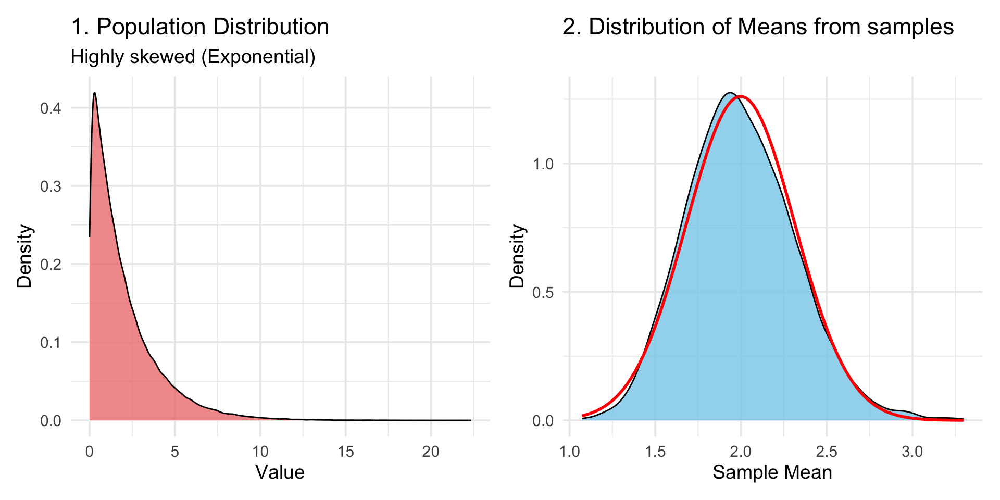
Sampling distribution
Based on central limit theorem we know that the shape will be normal.
We know the area under the curve and other properties about the normal based on PDF
However, we dont have time and resources to sample again and again, so how does this help us?
That we can assume our statistic is an unbiased best guess. We then want to ask our self “How good is that guess?” Or “How confident are we in this guess”
sampling SD ≠ population SD
The dispersion parameter is what we are going to be focused on the most rather than the mean.
The SD of the sampling distribution is the standard error of the statistic (mean, b, r, SD, etc).
The width of the sampling distribution depends on the population variance but also the sample size!
We have an estimate of population variance (and any other population parameters) and we defined sample size!
Code
library(dplyr)# --- Step 1: Create a "True" Population ---true_population_mean <-20true_population_sd <-5population_size <-20000# Create the population data (a skewed gamma distribution)set.seed(456) # for reproducibilitypopulation_data <-rgamma(population_size, shape = (true_population_mean^2)/(true_population_sd^2), scale = (true_population_sd^2)/true_population_mean)# --- Step 2: Simulate Sampling for DIFFERENT Sample Sizes ---n_simulations <-5000# We'll run 5000 simulations for each sample sizesample_sizes <-c(5, 30, 100) # The different sample sizes we want to test# Create an empty data frame to store all of our resultsresults_df <-data.frame()# Loop through each sample size we want to testfor (n in sample_sizes) {# Create a temporary vector to store the means for the current sample size current_means1 <-numeric(n_simulations)for (i in1:n_simulations) {# Draw one random sample of size 'n' current_sample1 <-sample(population_data, n)# Calculate the mean of this sample and store it current_means1[i] <-mean(current_sample1) }# Add the means for this sample size to our main results dataframe results_df <-bind_rows(results_df, data.frame(mean = current_means1, sample_size = n))}# Convert sample_size to a factor for better plottingresults_df$sample_size <-as.factor(results_df$sample_size)# Visualize the Sampling Distributions Side-by-Side ---sampling_dist_plot <-ggplot(results_df, aes(x = mean)) +# Create a separate histogram plot for each sample sizefacet_wrap(~ sample_size, scales ="free_y") +geom_histogram(aes(y = ..density..), bins =40, fill ="skyblue", color ="black") +geom_density(color ="red", size =1) +# Add a vertical line for the true population mean on all plotsgeom_vline(xintercept = true_population_mean, color ="blue", linetype ="dashed", size =1.2) +labs(title ="Sampling Distribution of the Mean for Different Sample Sizes",subtitle ="Drawn from the same skewed population. The blue line is the true population mean.",x ="Sample Mean",y ="Density" ) +theme_minimal()print(sampling_dist_plot)
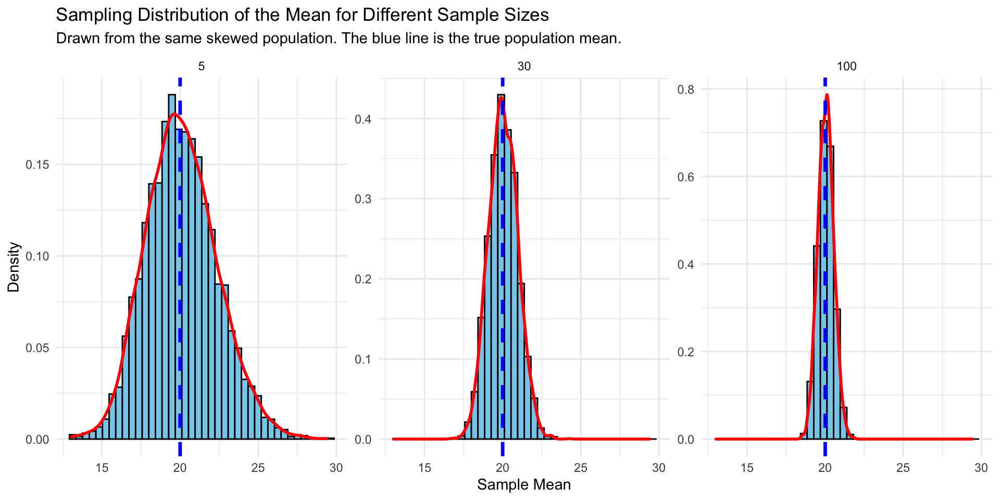
We can see this too by sampling randomly from a known population
sd(replicate(1000, mean(rnorm(5, 100, 15))))
[1] 6.780781
sd(replicate(1000, mean(rnorm(25, 100, 15))))
[1] 2.909424
sd(replicate(1000, mean(rnorm(100, 100, 15))))
[1] 1.509821
sd(replicate(1000, mean(rnorm(1000, 100, 15))))
[1] 0.4892731
Mean of sampling distribution is not systematically influenced by sample size
Sometimes we are unlucky. The good thing (?) is we will never know.
sampling distribution of regression coefficient
From our simulation:
sd(all_my_slopes)
[1] 0.1048326
From our single experiment:
summary(sample_model)
Call:
lm(formula = y ~ x, data = current_sample)
Residuals:
Min 1Q Median 3Q Max
-34.057 -8.496 0.809 7.263 35.347
Coefficients:
Estimate Std. Error t value Pr(>|t|)
(Intercept) 12.72707 2.56796 4.956 3.01e-06 ***
x 1.87082 0.09314 20.086 < 2e-16 ***
---
Signif. codes: 0 '***' 0.001 '**' 0.01 '*' 0.05 '.' 0.1 ' ' 1
Residual standard error: 13.16 on 98 degrees of freedom
Multiple R-squared: 0.8046, Adjusted R-squared: 0.8026
F-statistic: 403.4 on 1 and 98 DF, p-value: < 2.2e-16
SE implies different regression lines
Code
regression_lines_plot <-ggplot(current_sample, aes(x = x, y = y)) +geom_point(alpha =0.6) +# Add the 50 regression lines from our first 50 simulationsgeom_abline(data = all_my_models[1:50, ], aes(intercept = intercept, slope = slope), color ="gray", alpha =0.5 ) +# Add the "true" population line in blue so we can see how our samples vary around itgeom_abline(intercept = true_intercept, slope = true_slope, color ="blue", size =1.5) +labs(title ="Regression Lines from 50 Different Samples",x ="Predictor (x)",y ="Outcome (y)" ) +theme_minimal()print(regression_lines_plot)
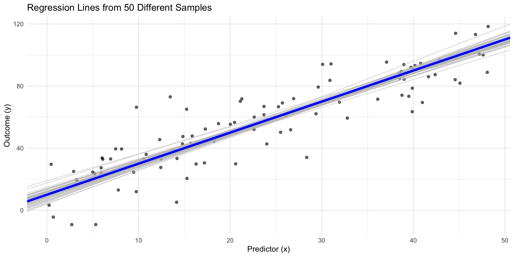
Regression Band
Code
ggplot(sample_data, aes(x = x, y = y))+geom_point() +geom_smooth(method='lm', se =TRUE) +theme_minimal()
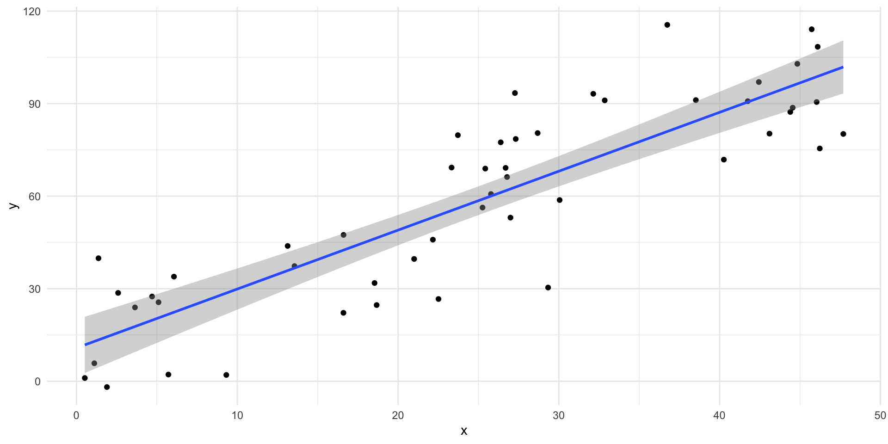
Using Sampling distributions
Sampling distributions are used to make probabilistic statements about statistics in the same way that the standard normal distribution is used to make probabilistic statements about scores.
Can propose different values for the population parameter and ask how rare the sample statistic would be if that population parameter were true (NHST).
We can determine the range within which the population mean is likely to be with a particular level of confidence (ie CI).
Inferences from data
Null hypothesis significance testing
Precision estimation of a particular parameter
Comparing alternative models to see which fits the data better
NHST
Logic:
We are interested in estimating some statistic, for which we do not know the true population parameter.
We are going to assume some true value (null hypothesis), to see if our statistic is likely (or not) based on this assumption.
We then either reject the null (and accept the alternative), or fail to reject (and then are back at square one. The theory lives to fight another day)
Problem of induction
Ideally we want deductive reasoning. If the premises are true, the conclusion must be true. e.g., all people are mortal…
Learning about the world necessitates induction. Start with specific observations and move to a general conclusion. e.g., all swans are white
We use our sample to try and make general claims about the population, but we can never observe everything. Thus we can’t prove our theories are true through induction alone.
Falsification
Popper states science does not progress by proving theories true (verification), but by proving theories false (falsification).
Research Hypothesis (H₁): This is your scientific theory
Null Hypothesis (H₀): A testable, and falsifiable straw man
Use deductive logic, grounded in probability theory, to challenge the null.
Then make a tentative inductive inference about (H₁)
NHST
Assume some population value you want to reject (H₀)
Collect a sample
Use sample statistics to construct sampling distribution
Compare the sample “test” statistic to a predefined “critical” value on the sampling distribution.
If test statistic > critical value, reject null (H₀)
If test statistic < critical value, fail to reject null (H₁)
Null and alternative hypothesis
(H₀) is often a specific parameter value. Typically it is zero, which is often referred to as the nil hypothesis.
It can be a range, but a specific (worse case) value is needed to create the sampling distribution
(H₁) is ALL other values. Even if you have a specific Estimate in mind
NHST in action
Code
library(ggplot2)# --- Step 1: Create a "True" Population ---set.seed(123) # For reproducibilitypopulation_size <-100000# World where the Null Hypothesis is TRUE (No difference between groups)population_h0_control <-rnorm(population_size, mean =100, sd =15)population_h0_treatment <-rnorm(population_size, mean =100, sd =15) # Identical to control# --- Step 2: Build the Sampling Distribution of the COEFFICIENT ---# We'll simulate thousands of experiments, and for each one, we will store the# estimated regression coefficient (the slope).n_simulations <-5000sample_size <-30# Create an empty vector to store the SLOPE from each simulated experimentslope_dist_h0 <-numeric(n_simulations)for (i in1:n_simulations) {# Draw samples from the world where the NULL IS TRUE sample_control <-sample(population_h0_control, sample_size) sample_treatment <-sample(population_h0_treatment, sample_size)# Combine data and create a grouping variable for the linear model combined_data <-data.frame(value =c(sample_control, sample_treatment),group =factor(rep(c("control", "treatment"), each = sample_size), levels =c("control", "treatment")) )# Run a linear model lm_result <-lm(value ~ group, data = combined_data)# Extract and store the SLOPE for the group predictor# The slope is in the 2nd row, 1st column of the coefficients table slope_dist_h0[i] <-summary(lm_result)$coefficients[2, 1]}# --- Step 3: Analyze the Sampling Distribution of the Slope ---# The standard deviation of this distribution is our "true" Standard Error.mean_of_slopes <-mean(slope_dist_h0)simulated_standard_error <-sd(slope_dist_h0)# --- Step 4: Connecting to a Single Regression Summary ---# Now, let's run just ONE experiment and see how its summary output compares to our simulation.our_sample_control <-sample(population_h0_control, sample_size)our_sample_treatment <-sample(population_h0_treatment, sample_size)our_data <-data.frame(value =c(our_sample_control, our_sample_treatment),group =factor(rep(c("control", "treatment"), each = sample_size), levels =c("control", "treatment")))our_lm_test <-lm(value ~ group, data = our_data)summary_our_lm <-summary(our_lm_test)# Extract the Standard Error from the summary outputestimated_se_from_summary <- summary_our_lm$coefficients[2, 2]# --- Step 5: Visualize the Sampling Distribution ---# Let's plot the distribution of the slopes we generated.plot_data <-data.frame(slopes = slope_dist_h0)se_plot <-ggplot(plot_data, aes(x = slopes)) +geom_histogram(aes(y = ..density..), bins =40, fill ="skyblue", color ="black") +geom_density(color ="red", size =1) +geom_vline(xintercept =0, color ="blue", size =1.5, linetype ="dashed") +labs(title ="Sampling Distribution of the Regression Coefficient (Slope)",subtitle ="The distribution of estimates from 5000 experiments. The blue line is the true slope (0).",x ="Estimated Slope (Difference between group means)",y ="Density" ) +annotate("text", x =0.5, y =0.05, label ="True Slope = 0", color ="blue", fontface ="bold", hjust =0) +theme_minimal()print(se_plot)
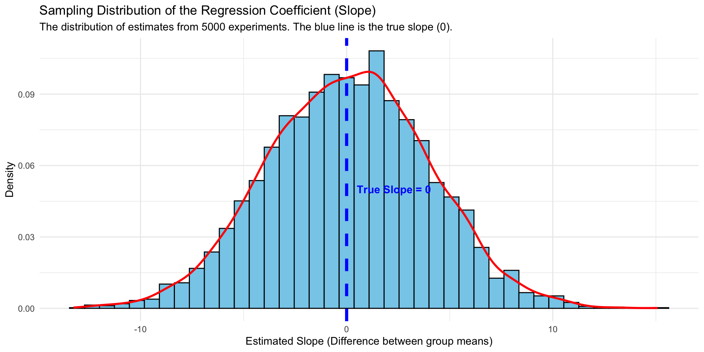
Sampling distribution regression estimate
Centered around the null.
“The standard deviation of the sampling distribution is the standard error of the statistic”
round(simulated_standard_error, 4)
[1] 3.8978
Our sample statistics
summary(our_lm_test)
Call:
lm(formula = value ~ group, data = our_data)
Residuals:
Min 1Q Median 3Q Max
-33.611 -8.378 1.665 10.748 28.944
Coefficients:
Estimate Std. Error t value Pr(>|t|)
(Intercept) 101.247 2.746 36.873 <2e-16 ***
grouptreatment -1.529 3.883 -0.394 0.695
---
Signif. codes: 0 '***' 0.001 '**' 0.01 '*' 0.05 '.' 0.1 ' ' 1
Residual standard error: 15.04 on 58 degrees of freedom
Multiple R-squared: 0.002666, Adjusted R-squared: -0.01453
F-statistic: 0.155 on 1 and 58 DF, p-value: 0.6952
NHST in action
I want to see if our statistic (-1.529) is unlikley or likely assuming the null.
Code
ggplot(plot_data, aes(x = slopes)) +geom_histogram(aes(y = ..density..), bins =40, fill ="skyblue", color ="black") +geom_density(color ="red", size =1) +geom_vline(xintercept =0, color ="blue", size =1.5, linetype ="dashed") +geom_segment(aes(x =-1.529, xend =-1.529, y =0, yend = .1), size =1.5, linetype ="dashed") +labs(title ="Sampling Distribution of the Regression Coefficient (Slope)",subtitle ="The distribution of estimates from 5000 experiments. The blue line is the null slope (0).",x ="Estimated Slope (Difference between group means)",y ="Density" ) +annotate("text", x =-8, y =0.09, label ="Observed slope", color ="black", fontface ="bold", hjust =0) +theme_minimal()
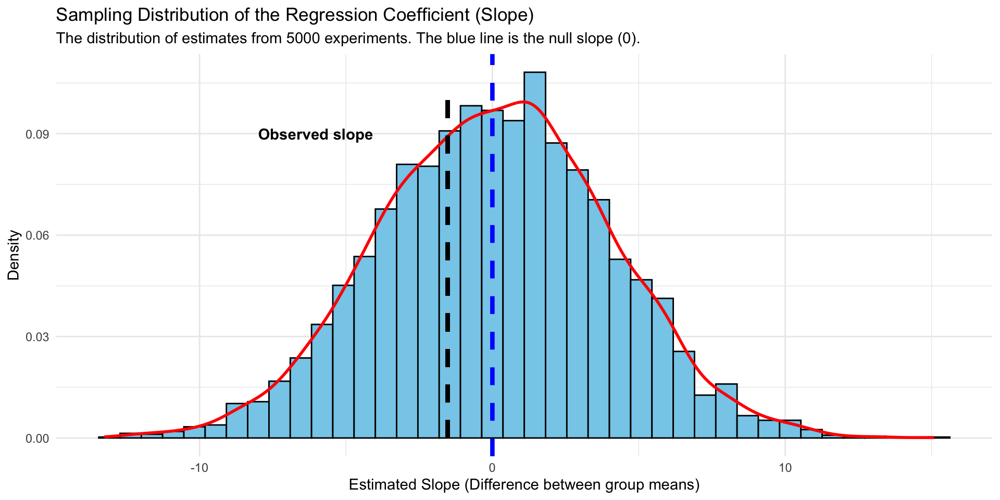
NHST in action
Next we need to define critical values.
Can be anywhere. Convention is to define extreme values as happening less than .05 percent of time.
Since extreme can be both above and below the mean, we set area under curve at 2.5% on each tail.
alpha <-0.05qnorm(1- alpha/2, 0, 3.883)
[1] 7.61054
qnorm(alpha/2, 0, 3.883)
[1] -7.61054
Code
# --- Define the Rejection Region on the ESTIMATE's Scale ---alpha <-0.05degrees_freedom <-100standard_error <-3.883# First, find the critical t-valuescritical_t_upper <-qt(1- alpha/2, df = degrees_freedom)critical_t_lower <-qt(alpha/2, df = degrees_freedom)# Now, convert these t-values back to the scale of your original estimatecritical_value_upper <- critical_t_upper * standard_errorcritical_value_lower <- critical_t_lower * standard_errorggplot(plot_data, aes(x = slopes)) +geom_histogram(aes(y = ..density..), bins =40, fill ="skyblue", color ="black") +geom_density(color ="red", size =1) +geom_vline(xintercept =0, color ="blue", size =1.5, linetype ="dashed") +geom_segment(aes(x =-1.529, xend =-1.529, y =0, yend = .1), size =1.5, linetype ="dashed") +labs(title ="Sampling Distribution of the Regression Coefficient (Slope)",subtitle ="The distribution of estimates from 5000 experiments. The blue line is the null slope (0).",x ="Estimated Slope (Difference between group means)",y ="Density" ) +annotate("text", x =-7.9, y =0.09, label ="Observed slope", color ="black", fontface ="bold", hjust =0) +geom_rect(aes(xmin = critical_value_upper, xmax =Inf, ymin =0, ymax =Inf), fill ="grey", alpha =0.1) +geom_rect(aes(xmin =-Inf, xmax = critical_value_lower, ymin =0, ymax =Inf), fill ="grey", alpha =0.1) +annotate("text", x = critical_value_upper +2, y =0.05, label ="Rejection\nRegion", color ="red", fontface ="bold") +annotate("text", x = critical_value_lower -2, y =0.05, label ="Rejection\nRegion", color ="red", fontface ="bold")
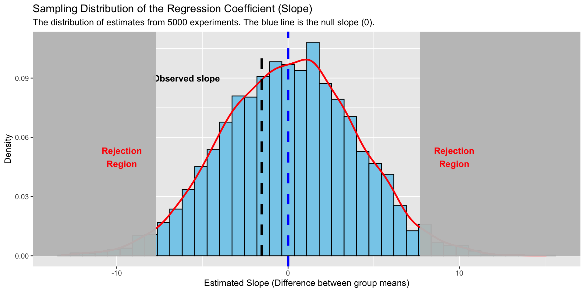
Decision
Given that our statistic was not in the rejection region, we fail to reject the null.
Our value was consistent with a process that occurred assuming no effect.
This doesn’t meant the null is true, just that the statistic from our sample was indistinguishable from a sampling process from a null distribution.
NHST in action
Rather than work with our sampling distribution in original units, we are going to translate this distribution into a standardized form. We do this by dividing by the standard error (which is a standard deviation).
The information is the same, this is just convention. Because we have to estimate the SE, we use the t distribution
\[\frac{(\hat{\beta} - H_0)} {\hat{\sigma}}\]
Critical values
Code
critical_t_upper <-qt(1- alpha/2, df =100)critical_t_lower <-qt(alpha/2, df =100)# Now, convert these t-values back to the scale of your original estimatecritical_o.unit_upper <- critical_t_upper * standard_errorcritical_o.unit_lower <- critical_t_lower * standard_errorcritical_t_lower
[1] -1.983972
Code
critical_o.unit_lower
[1] -7.703761
Sampling distribution of the test statistic
Code
library(ggplot2)set.seed(123) # For reproducibilitypopulation_size <-100000# World 1: The Null Hypothesis is TRUE (No difference between groups)population_h0_control <-rnorm(population_size, mean =100, sd =15)population_h0_treatment <-rnorm(population_size, mean =100, sd =15) # Identical to control# World 2: The Alternative Hypothesis is TRUE (A real difference exists)population_h1_control <-rnorm(population_size, mean =100, sd =15)population_h1_treatment <-rnorm(population_size, mean =105, sd =15) # Mean is 5 points higher# --- Step 2: Build the Sampling Distribution ASSUMING THE NULL IS TRUE ---n_simulations <-5000sample_size <-30# Create an empty vector to store the t-statistic from each simulated experimentt_dist_h0 <-numeric(n_simulations)for (i in1:n_simulations) {# Draw samples from the world where the NULL IS TRUE sample_control <-sample(population_h0_control, sample_size) sample_treatment <-sample(population_h0_treatment, sample_size)# Combine data and create a grouping variable for the linear model combined_data <-data.frame(value =c(sample_control, sample_treatment),group =factor(rep(c("control", "treatment"), each = sample_size)) )# Run a linear model lm_result <-lm(value ~ group, data = combined_data)# Extract and store the t-statistic for the group predictor# The t-statistic is in the 2nd row, 3rd column of the coefficients table t_dist_h0[i] <-summary(lm_result)$coefficients[2, 3]}# --- Step 3: Define Our Rejection Region ---# We set our standard of proof, alpha (α). This defines our "zone of surprise."# If a result falls in this zone, it's too unlikely to have happened by chance.alpha <-0.05# Find the critical t-values that mark the boundaries of our rejection regiondegrees_freedom <- (sample_size -1) *2critical_value_upper <-qt(1- alpha/2, df = degrees_freedom)critical_value_lower <-qt(alpha/2, df = degrees_freedom)# --- Step 4: Conduct "Our" Single, Real Experiment ---our_sample_control <-sample(population_h1_control, sample_size)our_sample_treatment <-sample(population_h1_treatment, sample_size)# Combine our single experiment's data for the linear modelour_data <-data.frame(value =c(our_sample_control, our_sample_treatment),group =factor(rep(c("control", "treatment"), each = sample_size)))# Extract the t-statistic and p-value for the group predictorour_observed_t <- summary_our_lm$coefficients[2, 3]p_value <- summary_our_lm$coefficients[2, 4]# --- Step 5: Visualize the Verdict ---# Let's plot the sampling distribution (from Step 2) and see where our# single result (from Step 4) lands.# Create a dataframe for the plotplot_data <-data.frame(t_values = t_dist_h0)ggplot(plot_data, aes(x = t_values)) +# Create the histogram of the sampling distribution under the nullgeom_histogram(aes(y = ..density..), bins =40, fill ="skyblue", color ="black") +stat_function(fun = dt, args =list(df = degrees_freedom), color ="blue", size =1)
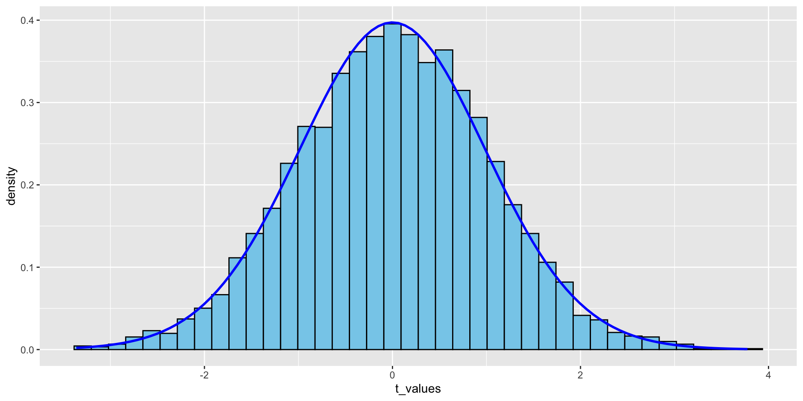
Don’t need to work with the simulated sampling distribution, as we just need sample statistics to estimate.
Convention is two look at more extreme regardless of direction, a two tailed test.
Convention is to set it at .05 AUC. This is your alpha level.
A “one tail” test does the same, such that you specify your direction prior to analzying. Your critical value is closer to the null because now 5% AUC is on one side.
Again, our test statistic is not more extreme than our critical value so we fail to reject the null.
The logic of rejecting or not rejecting should be it, as in nothing else is needed given it is a decision rule.
Unfortunately, current practice awkwardly combines two differnt views on NHST: Fisherian and Neymann-Pearson.
This results in people wanting to also interpret p-values.
p-values
Fisher only cared about p-values and the null. There were no alternative hypothesess or decisions to be made. Provided a strength against the null.
P-value:
\[p(\text{data} | H_0)\]
“The probability of getting the sample value or more extreme, assuming the null hypothesis is true”
Code
ggplot(data.frame(x =c(-4, 4)), aes(x = x)) +annotate("rect", xmin=-Inf, xmax=our_observed_t, ymin=0, ymax=Inf, alpha=0.2, fill="red") +annotate("rect", xmin=abs(our_observed_t), xmax=Inf, ymin=0, ymax=Inf, alpha=0.2, fill="red") +# Draw the t-distribution curvestat_function(fun = dt, args =list(df = degrees_freedom), color ="blue", size =1) +# Add a vertical line to mark our specific t-statisticgeom_vline(xintercept = our_observed_t, linetype ="dashed", size =1)+annotate("text", x =-3, y =0.15, label ="This area under the curve...", color ="black") +annotate("text", x =3, y =0.15, label ="...plus this area...", color ="black") +annotate("text", x =0.2, y =0.12, label =paste("...equals the p-value\n(p =", round(p_value, 2), ")"), color ="black", fontface ="bold", size =5) +# Add labels and titlelabs(title ="Conceptualizing a P-Value",x ="t-statistic",y ="Density" ) +theme_minimal()
Doesn’t tell you what you want to know, which leads to misunderstanding
“What’s wrong with NHST? Well, among many other things, it does not tell us what we want to know, and we so much want to know what we want to know that, out of desperation, we nevertheless believe that it does!” – Cohen (1994)
p(data | H0) when we really want p(H1 | data)
Problems with p-values
Focus on p-values leads to weird incentives
p < .05 as a condition for publication, publication as a condition for job/tenure/grant$, which leads to gaming the system given it all hinges on this one value. Makes this all you care about at the expense of other things.
Leads to p-hacking, file drawers, etc (more later)
Problems with p-values
Leads to dichotomous thinking.
“The world is flat p < .05”; “Surely god loves .051 as much as .049”
Fail vs not fail when the world is much more grey. Both in terms of original hypotheses (nil isn’t risky) as well as interpreting results.
Lacks a measure of interpretable effect size and an estimate of precision
Problems with p-values
Leads to uncritical thinking
“I wouldn’t trust a study with larger sample size than is standard (in the field), as that suggests they just gamed the system”. - WashU big wig
Not reporting necessary information as long as p-value is there, ritualistic p-value corrections without thought, power estimates without thought, asterisk
Problems with p-values
Assuming no effect, we are still wrong at best 1/20 times. Likely much more (low power, p-hacking, etc) in published lit.
Assuming an effect exists, do our results tell us anything? Are they risky hypotheses at all? Instead low value, low precision (“differences” are enough), almost no non-nil null hypotheses.
p-values and NHST
… are intrinsically tied.
But there are other ways!
Estimation
Logic:
Sampling distribution provides us with information about how much we can trust the parameter estimate.
We can quantify this precision via a confidence interval (CI), created from the sampling distribution.
Rather than focus on null/nil, focus on effect size estimate.
Can also do NHST, but with a focus on gauging uncertainty
Confidence intervals
Effect sizes
practical versus statistical significance
“One weird trick to significance. PhDs hate it.”
Model comparison
We should explicitly test theories against one another rather than weak null/nil hypotheses.
Build more than one regression model and pit two (or more) models against one another
Compare which fit the best. The focus can be on the overall model fit or on specific coefficients. Each depend on sigma, which is used estimate SE.